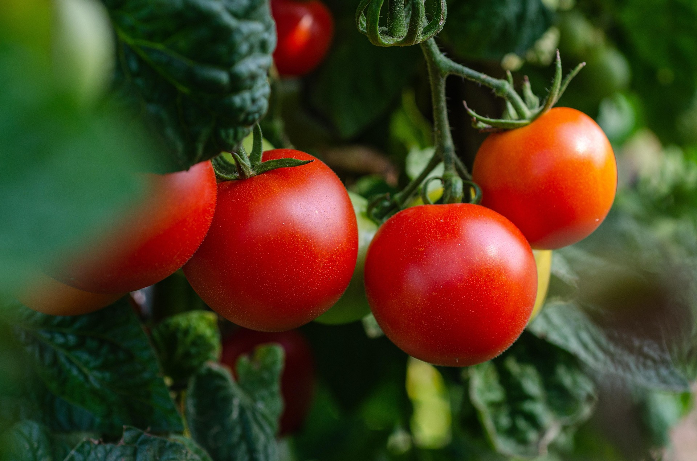
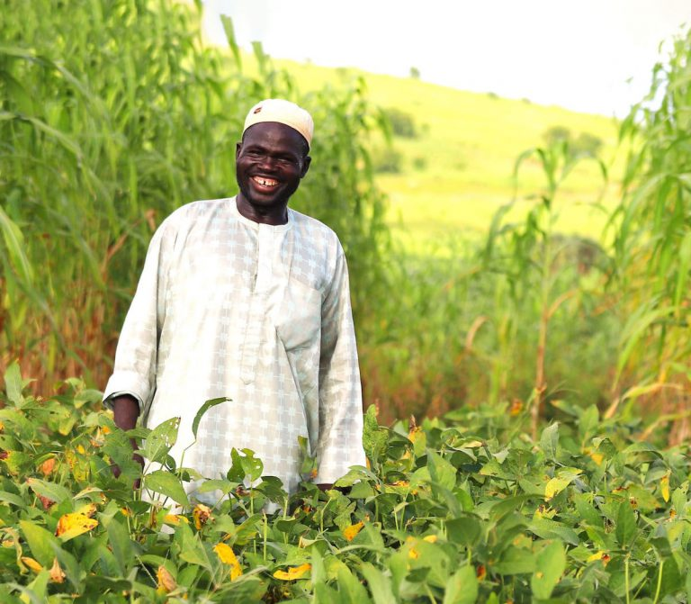

Nigeria's agricultural potential is immense, yet significant value is lost before produce reaches consumers. At Velora, we believe this challenge presents one of the country's greatest opportunities for sustainable industrial growth.
We are building a food manufacturing company that transforms locally sourced agricultural produce into high-quality consumer products while strengthening local value chains, supporting farmers, and contributing to a more resilient food system.
Our ambition is to build a trusted African food manufacturing company through disciplined execution, operational excellence, and responsible growth.

Nigeria's population is projected to continue growing, increasing demand for affordable, high-quality packaged food products. This demographic trend creates long-term opportunities for food manufacturers that can consistently deliver value.
Processing agricultural produce locally creates more economic value than selling raw commodities. Velora's business model focuses on increasing value within Nigeria through manufacturing, creating opportunities for farmers, suppliers, distributors, and consumers.
Food is a resilient sector. Demand for essential food products remains relatively stable because they are part of everyday household consumption. By focusing on quality and operational excellence, Velora aims to build a business capable of serving this growing demand over the long term.
We begin with tomato-based products because they represent a significant opportunity for value addition. As the business grows, we intend to expand into complementary food categories using the same manufacturing capabilities, quality systems, and distribution network.
We believe sustainable businesses are built through disciplined execution rather than rapid expansion. Our strategy prioritises operational excellence, financial discipline, strong governance, and long-term value creation.
Every product we manufacture contributes to a broader objective: Supporting local agriculture, strengthening manufacturing, reducing food loss, creating employment, and improving food security.
Why We Believe Velora Can Create Long-Term Value
Population growth, urbanisation, and changing consumer lifestyles continue to increase demand for packaged food products.
Government policies and market trends increasingly support domestic manufacturing and value addition, creating opportunities for businesses that invest in local production.
Processing agricultural produce increases shelf life, improves convenience, and captures more economic value than selling fresh produce alone.
Strong brands earn customer loyalty through quality, consistency, and reliability. Our objective is to build a food brand that consumers trust and choose repeatedly.
We believe the strongest businesses are built through consistent execution, careful capital allocation, and long-term thinking.
Velora is committed to building a company founded on accountability, transparency, ethical leadership, and responsible decision-making. As the company grows, we will continue strengthening our governance framework to meet the expectations of investors, regulators, financial institutions, and strategic partners.

Our business model naturally aligns commercial success with positive social and economic outcomes. Our priorities include:
As our operations expand, we intend to measure and report our progress transparently.
One thing investors value above rapid growth is disciplined execution. At Velora, we believe sustainable businesses are built by managing resources responsibly, making thoughtful investment decisions, and focusing on long-term value creation rather than short-term results.
By 2030, Velora aims to be recognised as a trusted Nigerian food manufacturing company with:
Our ambition is not to become the largest food manufacturer.
Our ambition is to become one of the most trusted.
We welcome conversations with investors, strategic partners, development finance institutions, and organisations that share our vision for strengthening Africa's food manufacturing sector.